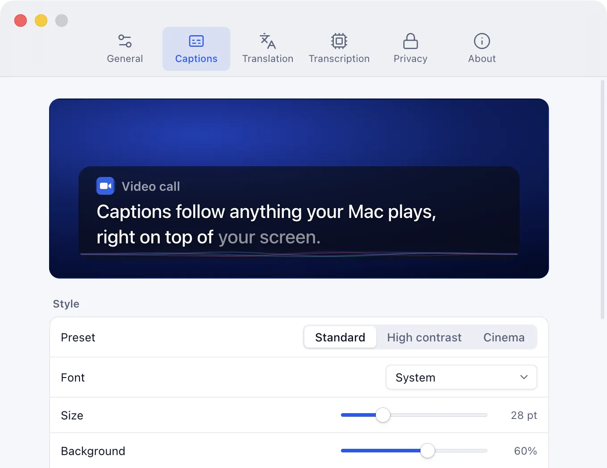
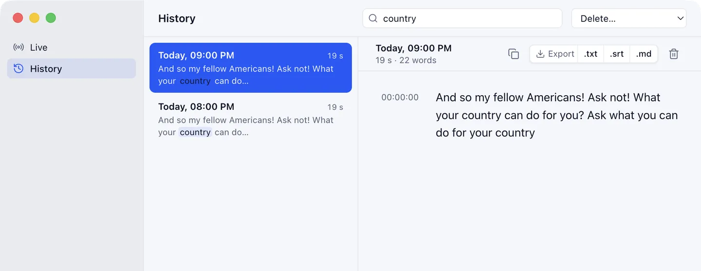

Captions for everything your Mac plays. The audio never leaves it.
Spokemark puts what's said in calls, videos and podcasts on screen as it's said, using a Whisper model that runs on your Mac's GPU. Free and open source, no account. Recognizes English speech.
v0.2.0 · Apple silicon · macOS 14.2 or later · not notarized yet: how to open it
Real output, replayed at its real timing: Spokemark captioning jfk.wav, a public-domain recording, played through a Mac's speakers. Each tick is one pass of the model; dim words can still change. Raw log
Final caption: And so my fellow Americans! Ask not! What your country can do for you? Ask what you can do for your country.
How it worksspeaker → screen
Five steps, all on your Mac.
Each one is a separate piece of the repository, measured on a MacBook Air M4.
-
audiotap · Swift
Tap the output
A CoreAudio process tap copies what the Mac plays. Playback stays audible; no virtual audio driver.
~32 ms tap → app -
Silero VAD · 16 kHz
Wait for speech
A voice detector gates the model. No speech, no transcription, so silence stays silent.
0 words in 621 s of silence -
whisper.cpp · Metal
Recognize
Whisper runs on the GPU in its own process and re-reads a sliding window every 500 ms.
179 ms per pass, p50 -
LocalAgreement-2
Confirm
A word is confirmed when two passes in a row agree. Confirmed text never changes.
~0.95 s to confirm, p50 -
overlay
Show
The caption is painted above every app, provisional tail first, then settled.
0.45 s speech → screen, p50
Whisper doesn't stream word by word, so the delay is one step, plus inference, plus agreement. The alternatives we tried and dropped are in DECISIONS.md.
Featuresduring and after
On screen while it's said. Searchable after.
- Over everything
- The caption stays above full-screen apps and on every Space. Clicks pass through it; drag and resize it in edit mode.
- Any app that makes a sound
- Zoom, Meet, Teams, YouTube, a podcast app. Spokemark listens to the Mac's output, so there's nothing to install in them and no bot joins your call.
- Made for reading
- Standard, High contrast and Cinema presets; font, size, background, 2–3 lines, top or bottom, with a live preview.
- Live translation macOS 26
- The translation under the original, or on its own, by Apple's on-device Translation framework into the languages installed in System Settings.
- Speaker changes experimental
- With the Enhanced · speakers model, a new line starts when someone else talks. It doesn't say who.


- A transcript you can search
- Every session is kept as text, never as audio, with full-text search across sessions. Export to .txt, .srt or .md.
- You decide how long
- History is deleted after 30 days by default. Keep it longer, delete a range, or turn it off.
- From the menu bar
- Start, stop and fix problems from a panel in the menu bar, or from anywhere with a shortcut:
- Start or stop captions⌥ ⌘ C
- Show or hide the caption⌥ ⌘ O
- Move the caption⌥ ⌘ E
Privacywhat goes where
From the speaker to the model. Nowhere else.
Each line is backed by code in the repository; CLAIMS.md lists the file for each.
Stays on this Mac
- Audio
- Goes from the tap to the speech engine in memory, over local pipes. It is never recorded or saved.
- Recognition
- whisper.cpp on the GPU, in a helper process of the app.
- Translation
- Apple's Translation framework, on-device, with the language packs from System Settings.
- Transcripts
- Text only, in
~/Library/Application Support/Spokemark/history.sqlite. - Kept 30 days by default, or not at all.
Goes over the network
- Speech models
- Downloaded once from huggingface.co at pinned versions, and checked against a SHA-256 hash before use.
- That's the only request in the app's code: no account, no analytics, no update check.
Check it yourself while captions are running. In our test, with captions and translation on, it printed nothing: no open connections.
lsof -nP -i -a -p "$(pgrep -d, -f Spokemark.app)"Performancemeasured, not estimated
About half a second from speech to screen.
MacBook Air M4, 16 GB, macOS 26.6.2. Real speech played through the system output and captured by the app. Latency runs from a word's last sound to the overlay painting it.
| Metric | Standardbase.en · default | Enhancedsmall.en |
|---|---|---|
| Speech → screen, p50 / p95 | 0.45 / 1.3 s30-min session | 0.63 / 1.5 s6-min session |
| Word error rate | 2.3 %2,750 words | 3.8 %550 words |
| Words invented in silence | 0in 621 s | 0in 124 s |
| Memory, all processes | 666–755 MBno growth over 30 min | ~1.0 GBstable |
| CPU, all processes | 8.2 % mediansampled every minute | —not measured |
| Model download | 148 MB | 488 MB |
Not verified yet: a real call in Meet, Zoom or Discord, Bluetooth headphones, and multiple displays. Methods, raw numbers and the full list are in RESULTS.md.
Open sourceMIT License
MIT, all of it.
The app, the capture helper and the speech worker are in one repository, under the MIT License. Use it, change it, ship it, sell it. There's no paid tier and no license key.
The Spokemark name and logo aren't covered by the license, so a fork needs its own (brand policy).
Bug reports, ideas and pull requests are welcome. Changes to the speech pipeline come with measured results.
Build from source
git clone https://github.com/VitoorFranca/spokemark.git
cd spokemark
brew install cmake && npm install
npm run build:native # audiotap + whisper-worker (Metal)
npm run models # base.en + Silero VAD
npm run package # release/Spokemark-darwin-arm64/Needs Xcode command-line tools, Node 24 and an Apple silicon Mac.
Installv0.2.0 · macOS
Download and open it.
Spokemark 0.2.0
Released 2026-10-12 · changelog
Download .dmg 144 MB.zip (131 MB)SHA256SUMS.txtAll releases
- Mac
- Apple silicon (M1 or later)
- macOS
- 14.2 or later; translation needs 26
- Speech
- English
- Permission
- System Audio Recording only. No microphone, no screen recording.
- Disk
- ~150 MB for the speech model, downloaded on first launch
Move it to Applications
Open the .dmg and drag Spokemark to Applications. To check the download first:
shasum -a 256 -c SHA256SUMS.txt.Open it the first time
Builds aren't notarized yet (the project has no Apple Developer ID), so macOS blocks the first launch.
On macOS 15 or later: try to open it, click Done, then go to System Settings › Privacy & Security and click Open Anyway. On macOS 14: right-click Spokemark and choose Open.
Allow system audio
The setup asks for System Audio Recording, then downloads the speech model. Play any video to see your first caption.
Before you install
- Does it work with Zoom, Meet and Teams?
- It captions whatever the Mac plays, so it doesn't depend on the app. We haven't tested it in a real call yet.
- Does it caption my own voice?
- No. It hears the Mac's output, not the microphone.
- Which languages?
- It recognizes English speech. The app's interface is in English and Portuguese (Brazil).
- What does it cost?
- Nothing. No trial, no account, no paid version.